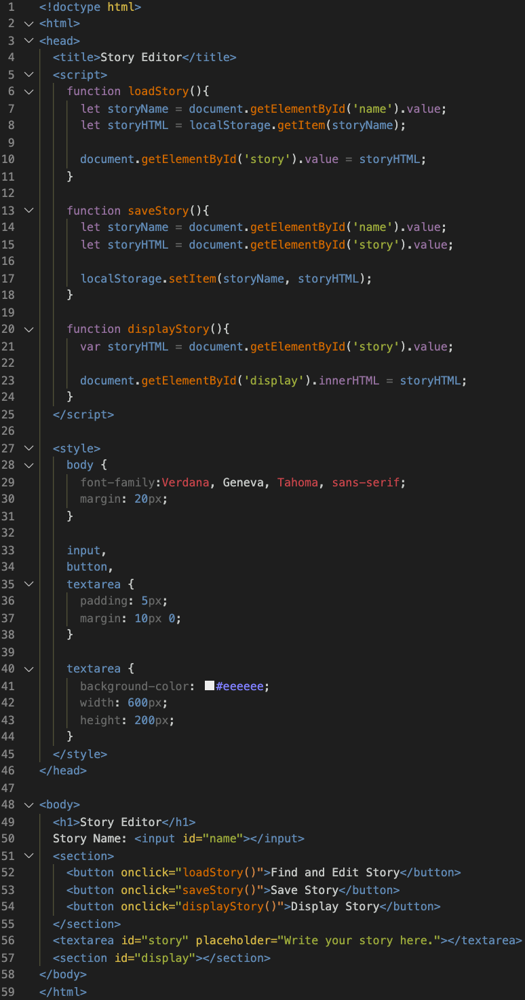

Week 1 Notes
Doing Stuff With Web Things: Local Storage(Section 3)
How to get, store, and display user data.
Use inputs (input, textarea) to get user data.
Save input data to a variable using ".value" to get data from the input and "localStorage.setItem" to store the data.
Local storage uses key-value pairs(In the code example, "storyName" becomes the key and "storyHTML" becomes the value).
Use "localStorage.getItem" to retrieve a saved story. It searches for the key (storyName) and saves its value (storyHTML) to a variable. You then insert the value into the text area for the user to resume editing.
To display the story, take the value of the text area and insert it into the "display" section.
Code Example
Story Editor Master Mobile UX
Develop mobile first and work your way up to desktop.
Focus on important content when they first open the page to keep users' attention. Don't make users hunt for the content and functionality of the app.
Improve user experience by being there to help with issues, having a clear purpose for your app, and reducing steps to make sure the process requires as few moves as possible. Automate as much as possible.
Think about reachability for mobile devices and tablets. Make sure key items are in easy-to-reach places.
Reduce speed wherever possible: reduce image usage, use SVG/Webfonts, optimize and minify CSS and JS, and GZIP(compress) files(eliminates unecessary data).
Mobile input - tips to make forms user friendly:
- Put labels inside of the input field and float the label to the top of the field when data is entered.
- Use as few fields as possible by offering checkbox options and only showing the fields that are needed.
- If you must use many fields, section it out, but include and indicator to tell users how many more pages of input are needed.
- Autocomplete!
- When dealing with passwords, show the password by default and give the option to hide it.
- When dealing with credit card entry, use auto-space and auto-advance for easy entry.
- Present appropriate keyboards and include link for phone numbers.
When advertising, do NOT use pop-ups! MAke ads unobstrusive and think about whether you would be irritated by the ad.
Keep ads small and simple - don't take up too much space and don't put them too high on the page.
Tips for user-friendly ads:
- Small ads that expand on click.
- Use ad as the background where content scrolls over the ad, offering small views of the ad here and there.
- Include a small sticky ad at the bottom that expands on click.